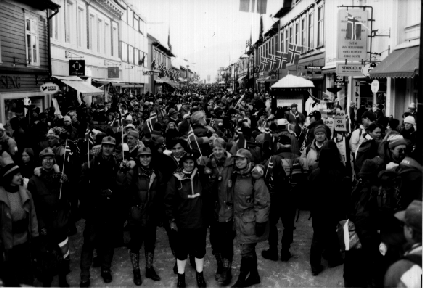

Festkomitéen

- Hva er festkomitéen?
- En gruppe på 7-8 ansatte med ansvar for avvikling av faste sosiale
arrangementer. Komitéen er dessuten en kreativ og initiativrik gruppe
som står for en rekke store begivenheter utenom det faste opplegget
- Faste arrangementer:
- Årsfest:
- En stilfull helgetur for ansatte sammen med ektefeller, ledsagere og barn.
Arrangementet foregår på vårparten, og arrangeres vanligvis som en
ski-weekend på et hotell med utfartsmuligheter
- Båttur:
- Kveldscruise på Oslofjorden med bevertning, musikk etc. Går av stabelen
i august. Ofte belyses emner som sjørøvere, cowboyer, indianere etc.
gjennom bekledningen og rammen rundt arrangementet
- Skjennungstua:
- Skitur til Skjennungstua i Nordmarka. Arrangementet inneholder bl.a.
viltgryte og fakkeltog
- Eksempler på andre arrangementer:
- Sesongbetonte pub’er på Skøyen (kontoret)
- Busstur til OL på Lillehammer med egen villmarksleir like ved
OL-løypene